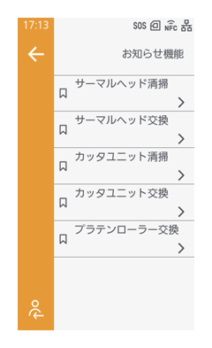

清掃・部品交換の時期の通知設定
［システム］ > ［お知らせ機能］

お知らせ機能を有効にすると、消耗部品（サーマルヘッド、カッタユニット、プラテンローラー）の清掃時期や交換時期が近づいていることをお知らせするステータスアイコンと通知バナーが表示されるようになります。
お知らせ機能で設定できる通知は以下のとおりです。
サーマルヘッドの清掃時期
サーマルヘッドの交換時期
カッタユニットの清掃時期
カッタユニットの交換時期
プラテンローラーの交換時期
［システム］メニュー内の［お知らせ機能］で有効にしたい通知と、それぞれの通知間隔（印字距離やカット回数など）をあらかじめ指定します。
指定した時期になると、ステータスアイコンと通知バナーでお知らせします。
例：［サーマルヘッド清掃］で設定した印字距離に達したとき
◆cap_notifications_clean

通知バナーは一定時間が経過すると消えますが、オンラインまたはオフライン画面のをタップして、お知らせ画面からも確認できます。
◆cap_notificationlist- 表示されるステータスアイコンについて詳しくは、製品の状態を確認する（ステータスアイコン）を参照してください。
- ［プリンタ清掃］および［サーマルヘッド交換］の［間隔］は印字距離を示します。
- ［カッタユニット清掃］および［カッタユニット交換］の［間隔］はカット回数を示します。
- ［プラテンローラー交換］の［間隔］は用紙搬送距離を示します
- ［プリンタ清掃］および［サーマルヘッド交換］の［現在の値］には、現在までの印字距離、［カッタユニット清掃］および［カッタユニット交換］の［現在の値］には現在までにカットした回数が表示されます。
初期値
［サーマルヘッド清掃］：無効
［間隔］：400m
［サーマルヘッド交換］：無効
［間隔］：100km
［カッタユニット清掃］：無効
［間隔］：1000k cuts
［カッタユニット交換］：無効
［間隔］：1000k cuts
［プラテンローラー交換］：無効
［間隔］：100km